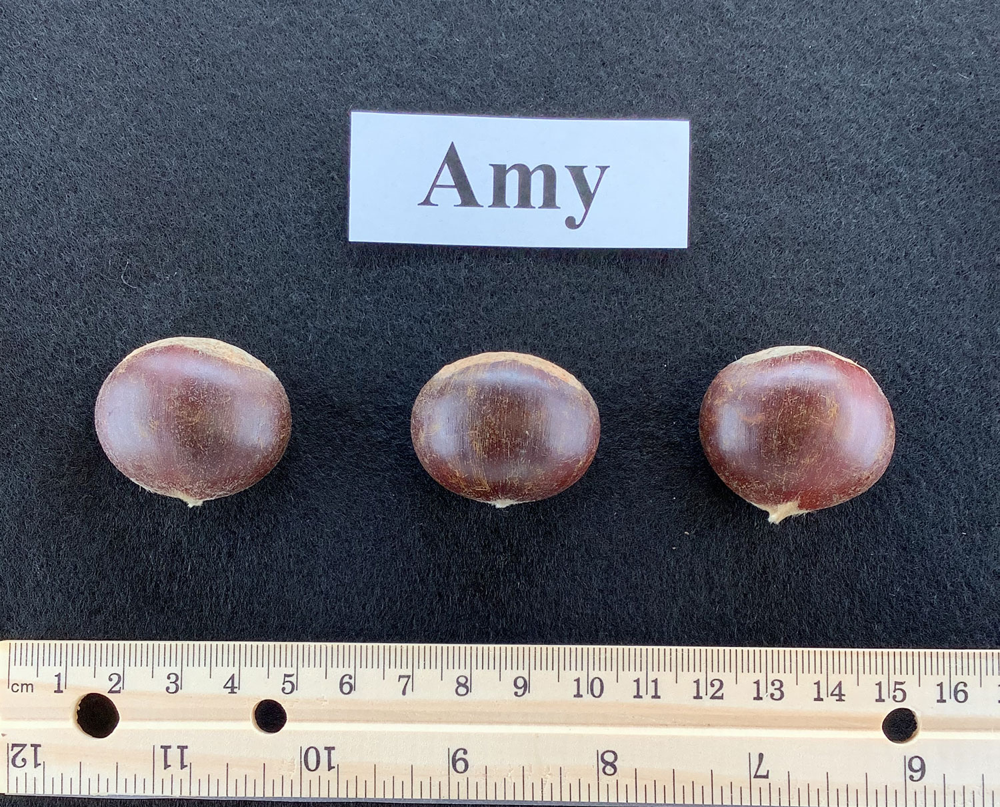

Amy
‘Amy’ (C. mollissima) is a G. Miller selection (72-400) from a 1972 planting of C. mollissima seedlings in Carrollton, Ohio, from the same planting that produced ‘Miller 72-76’, ‘Gideon’, and ‘Peach’. Its mother was acquired from Ackerman Nursery, Bridgman, Michigan, in 1957. ‘Amy’ displayed greater cold hardiness than most other C. mollissima trialed in Carrollton and breaks bud relatively early in spring. It consistently bears high yields. DNA markers indicate that it is approximately one-eighth Japanese, likely contributed by its unknown father. Its nuts are small to medium, peel well, and have an excellent flavor. ‘Amy’ matures earlier than ‘Eaton’ and ‘Sleeping Giant’, though nut size tends to decline with mature bearing.